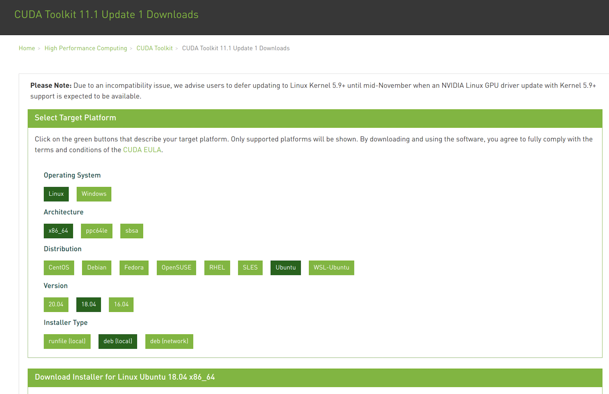
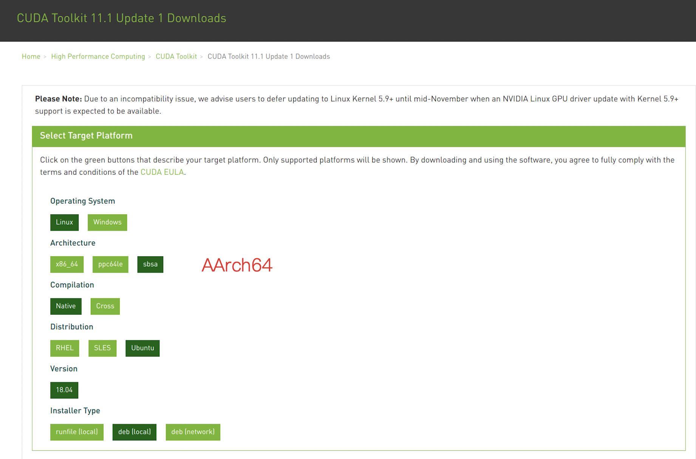

How to Install Low-Latency / Realtime Kernel¶
This document describes the steps to install low-latency/realtime kernels with Nvidia driver on Ubuntu 18.04.
Before You Begin¶
Low-Latency/Realtime kernel is only required for running Apollo software stack in the vehicle. If your sole purpose was to develop/test your algorithms or to run simulation software (e.g., LGSVL simulator) on top of Apollo, then maybe you don’t need to install low-latency/real-time kernels described here at all.
Ubuntu Low-Latency Kernel¶
Ubuntu low-latency kernel (availabe in Ubuntu repository) is completely capable of low- to no- latency for running Apollo in the vehicle. Preempt optimization is enabled in its kernel configuration, and latency as low as 0.1 millisecond can and has been achieved using it.
The steps required to install Ubuntu low-latency kernel are described below:
Install the latest low-latency kernel and its headers.
sudo apt-get update
# Install the latest low-latency kernel & headers.
sudo apt-get install linux-image-$(uname -r)-lowlatency linux-headers-$(uname -r)-lowlatency
Note:
Please change
$(uname -r)to the latest kernel should there be newer kernel packages available. (You can view newer packages availabe withapt list --upgradable.) The latest kernel version on Ubuntu 18.04 as of this writing (Dec 02, 2020) is5.4.0-56.
Reboot to start the low-latency kernel.
sudo reboot
Install Realtime Kernel¶
There is a community-contributed Building Realtime Linux for ROS2 document for building/installing PREEMPT_RT kernel on Ubuntu 20.04, which is applicable to Ubuntu 18.04 also. Please follow the instructions there to install the latest stable realtime kernel first.
Install Nvidia Driver¶
Install Nvidia Driver for Low-Latency Kernel¶
For Ubuntu low-latency kernel, the steps to install Nvidia driver is relatively straightforward.
Download and install the latest Nvidia driver from the CUDA Toolkit Downloads Page.
Choose either Local Installer(“deb[local]”) or Network Installer(“deb[network]”) for Installer Type and follow the instructions there.


Note
You may need to regist and sign CUDA EULA to download Nvidia packages.
For example, below is the instructions installing Nvidia driver on x86_64 Ubuntu 18.04.5 with the “deb[local]” approach:
wget https://developer.download.nvidia.com/compute/cuda/repos/ubuntu1804/x86_64/cuda-ubuntu1804.pin
sudo mv cuda-ubuntu1804.pin /etc/apt/preferences.d/cuda-repository-pin-600
wget https://developer.download.nvidia.com/compute/cuda/11.1.1/local_installers/cuda-repo-ubuntu1804-11-1-local_11.1.1-455.32.00-1_amd64.deb
sudo dpkg -i cuda-repo-ubuntu1804-11-1-local_11.1.1-455.32.00-1_amd64.deb
sudo apt-key add /var/cuda-repo-ubuntu1804-11-1-local/7fa2af80.pub
sudo apt-get update
sudo apt-get install nvidia-driver-455
Note:
The number in
nvidia-driver-XXXshould match that in the local installer (455 in the example above).
Reboot for the changes to make effect.
Run
nvidia-smito check if everything is OK.
Install Nvidia Driver for Realtime Kernel¶
Please follow the first step listed above first. However, as the Nvidia driver
does not support real-time kernels, running
sudo apt-get install nvidia-driver-455 on a PREEMPT_RT kernel should partially
fail with the following error message:
The kernel you are installing for is a PREEMPT_RT kernel!
The NVIDIA driver does not support real-time kernels. If you
are using a stock distribution kernel, please install
a variant of this kernel that does not have the PREEMPT_RT
patch set applied; if this is a custom kernel, please
install a standard Linux kernel. Then try installing the
NVIDIA kernel module again.
*** Failed PREEMPT_RT sanity check. Bailing out! ***
We can set IGNORE_PREEMPT_RT_PRESENCE=1 when build Nvidia driver as a
workaround:
Run the following commands to build Nvidia driver:
# Change to Nvidia driver source directory
cd "$(dpkg -L nvidia-kernel-source-455 | grep -m 1 "nvidia-drm" | xargs dirname)"
# Build Nvidia driver with IGNORE_PREEMPT_RT_PRESENCE=1
sudo env NV_VERBOSE=1 \
make -j8 NV_EXCLUDE_BUILD_MODULES='' \
KERNEL_UNAME=$(uname -r) \
IGNORE_XEN_PRESENCE=1 \
IGNORE_CC_MISMATCH=1 \
IGNORE_PREEMPT_RT_PRESENCE=1 \
SYSSRC=/lib/modules/$(uname -r)/build \
LD=/usr/bin/ld.bfd \
modules
sudo mv *.ko /lib/modules/$(uname -r)/updates/dkms/
sudo depmod -a
Reboot the system
Run
nvidia-smito check if everything is OK.
Install ESD-CAN Driver (Optional)¶
You should follow the instructions to build ESD-CAN driver if necessary.